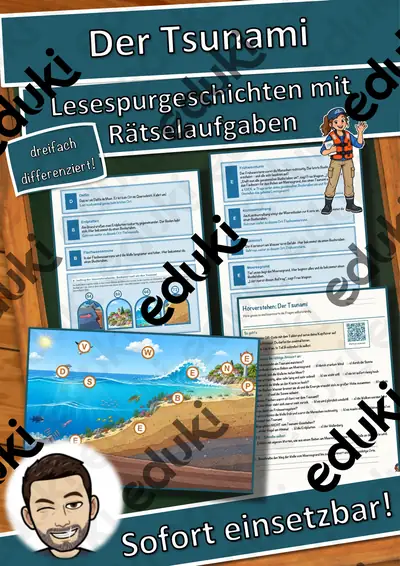
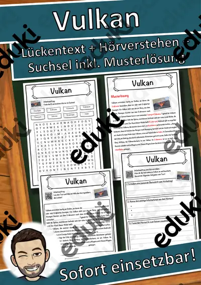

Erdbeben und Vulkane: Arbeitsblätter für Klasse 5–9 (Erdkunde)
Erdbeben und Vulkane gehören zur Physischen Geographie. Die Plattentektonik erklärt, warum sich Katastrophen an bestimmten Linien häufen.
Gearbeitet wird in der Regel an Erdaufbau, Plattentektonik und Vulkanausbruch, ergänzt um Erdbeben, Tsunami und Magma.
Die Lehrpläne der Länder sehen das Thema im Fach Erdkunde vor, in der Regel in der Sekundarstufe I (Klasse 5–9). Als Ziel gilt: die Schülerinnen und Schüler erklären die Entstehung von Erdbeben und Vulkanen.
Wer Erdbeben und Vulkane auf mehrere Stunden verteilt, startet mit Erdaufbau, übt an Vulkanausbruch und schließt mit Tsunami ab. Alle Blätter sind kopierfertig und enthalten Lösungen für die schnelle Kontrolle. Leistungsstarke und schwächere Lesende erhalten über die Lesespurgeschichten Texte in drei Stufen.
Aus unserem Katalog gehören 12 Materialien zu diesem Thema, darunter Der Tsunami, Das Erdbeben und Die Plattentektonik. Der Bestand umfasst 3 Lesespurgeschichten, 2 Prüfungstrainings und 6 Lückentexte mit Hörverstehen und reicht über Klasse 5–9. Ein Vulkan-Experiment mit Natron und Essig weckt Interesse, bevor die Theorie folgt.
Das gehört zum Thema
Passende Arbeitsblätter und Materialpakete

Der Tsunami – Lesespurgeschichte mit Rätselaufgaben (Klasse 8)

Das Erdbeben – Lesespurgeschichte mit Rätselaufgaben (Klasse 9)

Die Plattentektonik – Lesespurgeschichte mit Rätselaufgaben (Klasse 9)

Die Plattentektonik – Prüfungstraining Erdkunde (Klasse 8)

Vulkane und Erdbeben – Prüfungstraining Erdkunde (Klasse 8)

Vulkan Lückentext mit Wortspeicher Hörverstehen und Suchsel

Plattentektonik Lückentext mit Wortspeicher Hörverstehen und Suchsel

Tsunami Lückentext mit Wortspeicher Hörverstehen und Suchsel

Vulkanausbruch Lückentext mit Wortspeicher - Naturkatastrophe

Tsunami Lückentext mit Wortspeicher - Naturkatastrophe

Erdbeben Lückentext mit Wortspeicher Hörverstehen und Suchsel

Erdbeben in Haiti - Rückblick - Aktuelle Ereignisse
Häufige Fragen
Für welche Klassenstufe passen die Arbeitsblätter zu Erdbeben und Vulkane?
Der Schwerpunkt liegt auf Klasse 7; insgesamt deckt die Auswahl (12 Titel) Klasse 5–9 ab. In der Beschreibung jedes Materials steht die empfohlene Stufe.
Welche Inhalte decken die Materialien zu Erdbeben und Vulkane ab?
Behandelt werden unter anderem Erdaufbau, Plattentektonik, Vulkanausbruch und Erdbeben. Welche Aspekte in Ihrer Klasse Vorrang haben, richtet sich nach dem Lehrplan Ihres Bundeslandes.
Wie setze ich Erdbeben und Vulkane im Unterricht ein?
Ein Vulkan-Experiment mit Natron und Essig weckt Interesse, bevor die Theorie folgt. Danach genügt meist ein Material als Einstieg und eines zum Üben.
Mehr Material nach Fach und Klasse
- Alle Materialien Erdkunde
- Arbeitsblätter Erdkunde Klasse 5
- Arbeitsblätter Erdkunde Klasse 6
- Arbeitsblätter Erdkunde Klasse 7
- Arbeitsblätter Erdkunde Klasse 8
- Arbeitsblätter Erdkunde Klasse 9
- Unterrichtsmaterial Klasse 5
- Unterrichtsmaterial Klasse 6
- Unterrichtsmaterial Klasse 7
- Unterrichtsmaterial Klasse 8
- Unterrichtsmaterial Klasse 9
Verwandte Lehrplanthemen
- Naturkatastrophen (Erdkunde, Klasse 5–9)
- Energie, Rohstoffe und Umwelt (Erdkunde, Klasse 4–10)
- Rhein, Donau und die großen Flüsse (Erdkunde, Klasse 4–8)
- Alpen und Gebirge (Erdkunde, Klasse 4–8)
- Klimawandel und Klimaschutz (Erdkunde, Klasse 5–10)